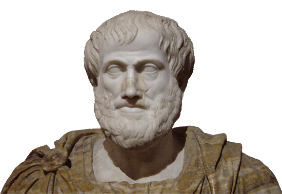

Todo lo que nunca quiso
saber sobre la ciencia
(Ni se atrevió a preguntar)

—That’s science. I don’t believe in science. Science is an intellectual dead end. You know, it’s a lot of little guys in tweed suits and cutting up frogs on foundation grants, and…
—Oh, I see. You don’t believe in science, and you also don’t believe that political systems work, and you don’t believe in God, huh?
—Right.
—So, then, what do you believe in?
—Sex and death. Two things that come once in my lifetime. But at least after death you’re not nauseous.
Qué se dice que es la ciencia
Cuando a alguna afirmación, razonamiento o investigación se le denomina «científico», se prebende dar a entender que tiene algún tipo de mérito o una clase especial de fiabilidad
Chalmers, Alan; Qué es esa cosa llamada ciencia.
Qué se dice que es la ciencia
La ciencia es una empresa sistemática que construye y organiza el conocimiento en la forma de predicciones y explicaciones pasibles de ser puestas a prueba acerca del universo.Fuente: Wikipedia
Qué se dice que es la ciencia
- La ciencia se basa en lo que podemos ver, oír, tocar, etc.
- Las opiniones y preferencias personales y las imaginaciones especulativas no tienen cabida en la ciencia.
- Las teorías científicas se derivan, de algún modo riguroso, de los hechos de la experiencia adquiridos mediante la observación y la experimentación.
- El conocimiento científico es conocimiento probado.
- La ciencia es objetiva.
- El conocimiento científico es conocimiento fiable porque es conocimiento objetivamente probado.
¿Cómo se consigue eso?
Método científico
Breve historia del método
Aristóteles
Aristóteles
- La observación cuidadosa, no meramente el registro de observaciones, era el punto de partida.
- No creía en la experimentación.
- Requería, además, una manera de hilar las observaciones para inferir más allá de las mismas.
Hay dos direcciones para proceder en nuestros métodos de investigación:
Paul Feyerabend

Against Method

"Anarquismo epistemológico"